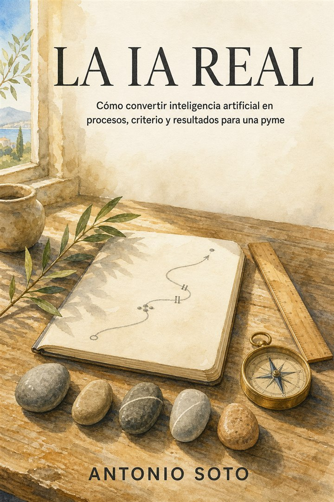

Versión 1.0 · julio de 2026
Kit de marca La IA Real
Una marca sobria, humana y práctica. Habla de tecnología con la serenidad de quien entiende el trabajo real.
Idea rectora
Tecnología con oficio.
La IA Real no vende futuro abstracto. Ayuda a convertir capacidad tecnológica en una forma de trabajar mejor, con contexto, criterio y evidencia.
Firma: “Menos demos. Más criterio y resultados.”01 · Logotipo
Del proceso al resultado.
Las cinco líneas representan las capas del método; el punto ocre señala un resultado observable. Mantén alrededor del logotipo un espacio libre equivalente a la mitad de la altura del símbolo. No cambies colores, proporciones ni orden.
02 · Color
Calma, materia y una señal de avance.
Usa Tinta y Papel como base. Reserva Ocre para una sola señal importante por composición. Oliva, Cielo y Arcilla sirven para distinguir categorías, nunca para decorar sin significado.
03 · Tipografía
Editorial para pensar. Sans serif para actuar.
La ventaja es el contexto.
Elige un proceso, mide cómo funciona hoy y decide con evidencia.
El sistema utiliza fuentes de sistema: no requiere licencias, descargas ni dependencias externas. Limita cada pieza a dos familias y cuatro pesos visuales.
04 · Voz
Directa, concreta y sin espectáculo.
Decimos
“Elige un proceso y mide cómo funciona hoy.”
“La revisión también tiene un coste.”
“Si no hay evidencia, no se escala.”
Evitamos
“Revoluciona tu empresa para siempre.”
“Desbloquea el poder infinito de la IA.”
“Automatiza todo sin esfuerzo.”
- Hablar de “tú” y de un proceso reconocible.
- Preferir verbos, cifras y decisiones a adjetivos.
- Explicar límites junto a beneficios.
- Usar “IA” con naturalidad; no convertirla en magia ni persona.
05 · Imagen
Trabajo humano, materiales reales.

Sí
Acuarela editorial, luz natural, mesas de trabajo, manos, papel, herramientas, equipos tomando decisiones y procesos visibles.
No
Robots humanoides, cerebros con circuitos, neón azul, túneles de datos, hologramas, stock corporativo artificial o símbolos de ciencia ficción.
Regla: la tecnología puede estar implícita; el trabajo y la decisión deben ser visibles.
Archivos maestros
Un sistema pequeño a propósito.
Dos SVG, seis colores y dos familias tipográficas bastan para web, presentación, newsletter y materiales del libro.
{kind=link}
{kind=link}